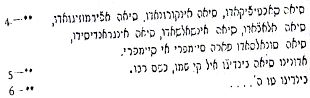

IV. BÖLÜM
SABETAYCILARIN TEŞKİLATI - DİNSEL,
Türkiye cumhuriyetinin ilanından sonra, Türk hükümeti ulusal programını uygulamaya koydu. Türk basını da bu konuya eğildi ve diğer konular yanısıra “Dönmeler kimdir, ya da kimler dönmeydi?” soruları çerçevesinde bu konuya da yer verdi. Basın kampanyası, bir kısmı gazetelerde beyanatlar veren, diğerleri de bu konuda çalışmalar yayınlayan Sabetay ekolü mensuplarının teşkilatına ve örf ve adetlerine nispeten az da olsa perdeyi kaldırdı. Bu bölümde mevcut olan kısımların hemen hepsi bu gazetelerden alınmıştır.{105}
Sabetay Sevi ölünce, sabetaycıların kolu kanadı kırıldı. Onun yerini alacak bir başkan arıyorlardı. Aslında, bu başkanlar çok geçmeden ortaya çıktılar. Daniel Israel Bonafoux adında bir ozan, Sabetay anısına saygı gösterisinde bulunan kalabalık bir Yahudi gurubunu biraraya getirmeyi başardı. Yardımcısı Abraham Michael Cardoso, İzmir’de, İstanbul’ca ve Kahire’de Sabetaycı fikirleri yaydı. Polonya’da Mordahay Ayzenştad Mesihlik propagandası yaptı ve çok geçmeden, Sabetay Sevi’nin kendisinde can bulduğunu açıklayıp Macaristan, Çekoslovakya, Bohemya, İtalya ve Polonya’ya dini geziler düzenledi.
Selanik de kendi açısından faaliyetsiz kalmadı. Cemaatte yeniden sorunlar getiren yeni bir Mesihlik hareketi baş gösterdi. Bu hareketini bitirmek için, şehrin hahamları kışkırtıcıları yerel makamlara bildirdiler. Takip edilmekten şikâyet eden kışkırtıcılar türbana büründüler, yani Sabetay Sevi gibi Müslüman oldular ve 1687 yılına doğru İbranice adı bugün maaminim olarak bilinen, Türkçe’si “dönme” olan tarikatı kurdular.
Yazarın bu tarikat hakkında yaptığı ve Vatan gazetesinde çıkan araştırmasında sözü kendisine bırakalım:
Mehmet Aziz’in (Sabetay) Ülgün’de{106} ölümü öğrenilir öğrenilmez, kayın pederi Abdul Gaffur{107}, kayın biraderi Abdullah Yakup ve Abdül Rahim, Sabetay’ın karısı Ayşe’yi Selanik’e götürmek için bu şehre gelirler. Sevi’nin ölümü 200 aileden oluşan sabetaycıları güç durumda bırakmıştı. Bir başkana ihtiyaçları vardı. Sevi’ye atfedilen ve ölümünden önce yazılmış bir mektup bu husustaki mirasçısı olarak, Sabetaycı cemaatin yönetimini devralan Abdullah Yakup’u öneriyordu. Sürüsünü Sevi’nin emirlerine göre gütmek için kendini zorladı, halkı onun kehanetlerinin gerçekleşmesini beklemeye teşvik etti, 613 misvot’un artık onlar için bir zorunluluk olmadığını açıkladı ve Müslüman dinine bağlı kalmaları gerektiğini de ilave etmeyi unutmadı. Bu sonuncu tavsiye, Sevi’nin hükümlerine bağlı olan bazı sabetaycıların hoşuna gitmedi. Uzun süredir Yakup’a tatsız bir saldırı hedefleyen Mustafa Çelebi adında birinin yönettiği nahoş bir hareket nihayet gerçekleşti. Bir Sabetaycı bir diğerine bir meşin parçası sattı; satın alan kişi bu parçayı kendi zevkine uygun bulmayınca satıcıya iade etti ama satıcı geri almayı reddetti. Her iki taraf Yakup’a başvurdular ve ondan meseleyi yargılamasını istediler. Yakup’un yorumu şuydu: “önceden belirlenmemesi nedeniyle geri alma hakkı mevcut olmadığından ve satılan mal hatalı olmadığı için satım işlemi yasal sayılır ve sonuç olarak satıcı malı geri almaya mecbur değildir”.{108}
Bu hüküm, Yakup’un evinde yapılan ve Mustafa Çelebi’nin de hazır bulunduğu fırtınalı bir toplantıda Sabetaycı halk tarafından tartışıldı. Yakup için pek sempatik olmayan atmosferden yararlanan Mustafa Çelebi ayağa kalkıp şöyle bağırdı: “Beni seven arkamdan gelsin”. Abdullah Çelebi dâhil partizanları kalkıp onu takip ettiler. Bu olay, hicri 1102 (1690) yılında sabetaycıların içinde meydana gelen bir fikir ayrılığının başlangıcını sahneye koyuyordu.
Sonuç ne olacaktı? Bu tarihten itibaren sabetaycılar iki gurup oluşturdular. Yakubiler (Jacobites) ve Osman Baba’nın müritleri Karakaşlar.
Bu tarihten itibaren aralarında sadece evlilik ilişkileri değil, en ilkel sosyal ilişkiler bile kesildi. Birbirlerine selam vermez oldular.
1) Yakubiler{109}
43 aile Yakup’a sadık kaldılar. Ona körü körüne itaat ediyorlar ve çilekeş bir hayat sürüyorlardı. Yakup’un sahip olduğu Yılan mermeri civarındaki büyük evin adı Saadethane idi. Burası Yakubi cemaatin merkeziydi.
Yakubi görüş şeriata dayanıyordu. Bu dinin mensuplarına maaminim{110} adı veriliyordu ve dua, oruç, hac ve zekât{111} gibi İslami hükümleri de ciddiyetle yerine getiriyorlardı. Yakup, dinsel fikir ayrılığından hemen sonra, cemaat mensuplarına bir örnek harekette bulunmak amacıyla, Mustafa Efendi adındaki biriyle birlikte Mekke’ye hacca gitti Mekke ile Medine arasındaki mesafeyi kat ederken bir devenin altında kalarak öldü. Hacı unvanını almış olan Mustafa Efendi Selanik’e döndü ve herkese Yakup’un ölmediğini. Kıble{112} yönüne doğru gittiğini anlattı.
Yakup’un erkek çocukları olmamıştı{113}. Kısaca hanım{114} olarak anılan kızı Ayşe, damad{115} unvanını alan Hüseyin Efendi ile evlendi. Erkek neslin namevcut olması, Yakup için bir halef aranması ihtiyacını doğurdu. Bu halef Hacı Mustafa Efendi oldu. Hükümet binasının karşısındaki Sabri Paşa sokağının köşesinde bir evde oturuyordu (şimdiki Venizelos Bulvarı). Yeni başkan şeriatı benimsemişti ve görevi devraldı.
Durumunu sağlamlaştırmak için Hacı Mustafa Efendi Mekke seyahati dönüşünde kendisine hakaret eden Mustafa Çelebi ve Abdullah Çelebi ile asla ilişki kurmak istemediğini anlattı. Diğer bir ifadeyle, Hacı Mustafa iki parti arasındaki diyaloga son veriyordu.
Hacı Mustafa Efendinin halefleri sırasıyla Mehmet Ağa ve İzak Ağa oldular. Unvanları zişan’dı. İzak Ağa’dan sonra 15 adet başkan devletou (devletli) unvanı ile sırasıyla görev aldı. On ikinci devletli çağına kadar Yakubiler gurubu kapalı tutuldu ve bundan sonra düşüşü başladı.
Yakubi başkanlar gerçek otokrat kimselerdi. Din, giysiler, örf ve adetler ve yaşam kavramları hususunda mevcut olan düzene ayak uydurmakta güçlük çekmiyorlardı. Evlenmek için, seyahate çıkmak için, bir oğlan çocuğu sünnet ettirmek için, bir iş veya bir meslek seçimi yaparken, hatta bir ameliyat olurken bile başkanın izni alınıyordu.
Hastalara, fakirlere ve ihtiyacı olan kimselere vermek üzere para toplanan bir fon mevcuttu. Toplanan meblağlar başkanın koyduğu zorunlu vergiler sonucu ortaya çıkıyordu ve nikâhlarda, hastalıkların tedavisinde vs. kullanılıyordu. Bu şekilde toplanan paralar ya başkanın kendisine ya da dosdoğru yararlanacak kişiye ulaşıyordu.
Doğum günü kutlamaları, nikâhlar ve ölümler Müslüman adetlerine göre yerine getiriliyordu ama tarikat ayininden sonra bir dua da başkan yapıyordu. Çok eşliliğe ya da boşanmalara ilişkin hükümler tamamen kaldırılmıştı. Miras yasası kadınlara tanınmıyordu.
43 aileden meydana gelen bu gurubun acayipliklerinden biri, asırlarca birbirinden ayrı kalan ve kesinlikle evlenmeye yaklaşmayan iki ayrı gurubu, bir zengin sınıf ve bir de fakir sınıfı oluşturmuş olmasıdır. Bu evlenme sınırlaması yabancı kişilerin gurubun örf ve adetleri hakkındaki şüphelerini arttırmıştır.
Türk okullara giden Sabetaycı çocuklar Türk arkadaşlarının başkan hakkında ve gurubun örf ve adetleri hakkında konuşmalarına şahit oluyorlardı. Sabetaycı çocuklar, Türk çocukların söylediklerini ailelerine sorduklarında, ailelerin cevabı şu oluyordu: “Hangi başkandan bahsediyorsunuz? Başkan denince biz mahkemedeki başkanı (yargıç) ya da belediye başkanını anlarız, başka bir şey değil.” Sabetaycı bir gencin evlenme zamanı geldiğinde, önceden beri içinde olduğu gurubun sırlarını öğrenmeye başlardı.
Dönmelerden söz ederken, Hasan Paşa adında Selanikli bir vali, neo-müslümanların ne İslamiyet’i ne de Yahudiliği izlemediklerini öğrenince 1722 yılında onları imha etmeye karar verir. Projesini uygulamaya koymakla uğraşırken, bazılarının dediğine göre Hasan Paşa öldü veya diğerlerinin dediğine göre öldürüldü. Valinin ölümü kendi durumlarını daha da sağlamlaştırmak için, dindar dönmeler tarafından istismar edildi.{116}
Bu durum iki asır boyunca devam etti. 19. Yüzyılın ikinci yarısı boyunca sırları muhafaza eden örtü şu koşullar altında açıldı: Gurup mensuplarından Cambour (Kambur) adında biri, Selanik’in ileri gelenlerinden Abdullah beye başvurdu ve sırların neler olduğunu ve saadethane evinin, yani Yakup’un tarikata miras bıraktığı evin, Sevi Yakup’un bıraktığı kutsal kalıntıların nerede bulunduğunu ona anlattı. Vali Hüsnü Paşa’ya müracaat eden Abdullah Bey, valiyi Kambur’un beyanatlarından haberdar etti ve gerekeni yapmasını istedi. Durumu haber alan guruptaki erkekler kutsal kalıntıları derhal ortadan kaldırdılar. Evin koruması Nimetullah Hanım sorulan sorulara hiçbir cevap vermek istemediği için tutuklandı.
İlk kez denenen bu tarikatın sırlarını elde etme çabası sonuç vermedi. 1291 hicri tarihinde (1874) Mithat Paşa Selanik valisiyken birçok devlet görevlisinin başlarını kazıttığını şaşkınlıkla öğrendi. Nedenini sorunca, ona onların Sabetay’ın müritleri oldukları söylendi. Mithat Paşa onlara başlarını bu şekilde kazıtmalarını yasakladı. Gözdağı olarak, aksi takdirde işten kovmakla tehdit etti.
1291 ve 1300 hicri yılında (1874-1882) gençlerden oluşan bir gurup okuldan çıkmış ve açıkça başkanlarının davranışlarına karşı olduklarını beyan ediyorlardı. Başkan verdiği cevapta onların tarikattan ihraç edilmelerini bir kararname ile bildirdi, ihraç edilenler kendileri hakkında alınan karara tamamen karşı olmakla birlikte ailelerine saygıları nedeniyle daha fazla ileri gitmediler. 1300 (1882) yılına doğru Sabetay Sevi, gençler tarafından yayınlanan Gonca-i Edeb (Eğitimin goncası) adlı bir dergide, “17. Yüzyılın şarlatanı” olarak tanımlandı. Bu durum karşısında, gurubun başkanı gençlere ait olan bazı hakları sınırlamak zorunda kaldı. 1300’den önce (1882), yabancı bir dilin eğitimi, İstanbul yüksekokullarına gitme, tıp eğitimi, hukuk ve eczacılık gibi eğitim faaliyetleri onlara yasaklandı. Daha sonra bu yasak kalktı ama bu gençlerin Avrupa’da eğitim görmeleri yasaklandı.
Bu gurubun mensupları genelde pek fazla ticaretle uğraşma eğilimi göstermediler. Büyük bir kısım devlet memuru görevini talep ettiler ve mükemmel şekilde de başarılı oldular.
2) Karakaş Gurubu{117}
Yakubi gurup gibi bu gurup da iki asır boyunca fanatik düşünceler içinde kapalı kaldı. Sabetaycı fikir ayrılığının mimarı Mustafa Çelebi’nin partizanlarından biri Abdül Rahman Efendi adında bir dönmeydi. Onun da 1088 (1677) yılında, yani Sabetay’dan tam dokuz ay sonra doğmuş bir oğlu vardı. Mustafa Çelebi Sabetaycı gücü eline geçirmek için ruh-göçü (reenkarnasyon) temeline dayanan bir plan hazırladı. İşte bu plan şu şekildedir. Genel kanıya göre Sabetay ölmemişti sadece ruhu başka bir vücuda geçmişti. Bu beden değiştirme olayının Yakup’un bedeni ile ilgisi olamazdı zira Sabetay sağken o da sağdı. Sevi öldüğü gün ruhu Abdül Rahman’ın karısının döl yatağına göçmüş ve dokuz ay sonra Sabetay’ın direkt halefi olan Osman adındaki erkek çocuk dünyaya gelmişti. Mustafa’nın planı iyi kombine edildiği için Yakup’tan ayrılan büyük sayıda Sabetaycı tarafından kabul edildi. Mustafa Çelebi’ye gelince, mistik bir hayat sürdü. 1114 (1702) yılında, yani Yakubilerle ayrılıktan 12 yıl sonra Mustafa, Osman’ı Sevi’nin temsilcisi ilan etti. O tarihte Osman 26 yaşındaydı. Uzun boylu, esmer, iri yarı, mavi gözlü ve cahil görünüşlü biriydi. Mustafa, başarısından güç alarak, 1128 (1716) yılında onu aynen Sevi gibi Mesih ilan etti. Yeni Mesih o zamanlar 40 yaşındaydı.
Bu açıklamalar tepkilere yol açtı. İbrahim Ağa adında biri, Osman’ın Mesih’in temsilcisi olabileceğini ama bir Mesih olmaması gerektiğini söylüyordu. Diğerleri buna karşıt bir fikri savunuyorlardı ki bu duruma göre bu gurubun da dağılma eğilimi gösterdiği anlaşılıyordu. Aslında, yoğrulma dönemindeki fikirler tartışma halindeyken, Osman Ağa kesin bir karar alınmadan önce 1133 (1726) yılında öldü, ölümü yeni tezatların ortaya çıkmasına neden oldu. İbrahim Ağa ve partizanları kendi görüş açılarında ısrar ediyorlardı. Bu görüş şuydu: “Mesih ölmez, bedeni çürümez”. Aksini iddia edenlere mezarı açıp cesedin durumuna bakmayı önerdiler. Eğer çürümemişse Mesih’tir, ama çürüdüyse değildir diyorlardı. Bu teklif kabul edilmeyince olan oldu ve ayrılık baş gösterdi. Yeni gurubun başına İbrahim Ağa geçti.
Osman Ağa ya da Osman Baba’nın üç oğlu ve dört kızı oldu. Büyük oğlu Abdül Rahman ya da Honyo onun yerine geçti. Ondan sonra on tane başkan birbiri ardına başkanlığı devraldılar ve gurubu yönettiler.
Honyo’nun yerine geçen kişi kabalist Derviş Efendi idi. Zohar ve Kabbala öğretilerindeki cinsel konulara olan yaklaşımlara yaptığı yorumlara istinaden kadınlara tam özgürlük tanımak istiyordu{118}.
Bu gurubun başkanları arasında Ambara adlı şahıs halkı ahlâk bozukluğuna sürükledi. Çevresi kötü kişilerle dolu merhametsiz biriydi.
Önceki gurubun başına gelenler bu gurubun da başına geldi. O da gelişmelere ayak uyduramadı, 19’uncu yüzyılın sonlarına doğru gurubun saçmalıkları karşısında yeni bir nesil ayaklanmaya başladı. Bu yeni nesil, önce Feyz-i Sübyan adlı okulu ve daha sonra Feyziye okulunu kurdular ve yetenekli öğretmenlerden oluşan bir ekip oluşturdular. Eğitimlerini tamamlayanlar yüksekokullara gidiyor ve doktor, avukat, profesör vs. oluyorlardı. Eğitim, ticarî yeteneklerini yükseltti ve kalıcı yararlar sağlamaları için gereken sosyal dayanışmayı güçlendirmeye yardım eden refaha erişmelerine yaradı.
3) Kapancı Gurubu{119}
İbrahim Ağa 1133 (1726) yılında yeni gurubun başına geçince Yakubi guruba yaklaşmanın yollarını aradı. Bu amaca erişmek için 31 yıl boyunca emekler sarf edildi ama aradaki fark gerçekten büyük olduğu için yakınlaşmak mümkün olmadı.
Bu gurup yeni bir batıl inançlar dokusu yaratma ihtiyacı duymadı. Karakaş gurubu ile kader bağı kurmuş oldukları için, bildikleri ile yetindi.
Bu gurup “İlerleme”nin etkisine de maruz kaldı. Yabancı diller öğrenmenin gerekliliğini diğer guruplardan önce anladı ve bu öncelik ticari hayatlarının geniş ölçüde gelişmesine yaradı. Kurduğu Terakki Okulu iyi sonuçlar aldı.
B - Dinsel, ailevî ve sosyal yaşam
1) Sabetay ve haleflerinde Tanrı inancı
Dönmeler dünyayı yaratan bir tanrının mevcudiyetine inanırlar. Onun diğerlerine göre olan üstünlüğüne inanırlar. Tanrıdan sonra Sabetay Sevi gelir.{120}
Daha yukarıda Osman Ağa’nın neden sonra ve hangi kavrama istinaden doğduğunu ve nasıl Sabetay’ın direkt halefi tayin edildiğini gördük. Sabetay gibi, Osman da “baba” adı verilen müritlerinden oluşan 63 kişi tarafından Tanrı ilan edildi. Osman’ın haleflerine halife (khalifes) denir.
Osman’ın sağlığında tanrısallığına inanan gurup mensupları, yangına karşı koruması için takılarını ve benzer değerli şeylerini ona bırakıyorlardı. Osman’a atfedilen bu korumacılık her şeyi yakıp yıkan bir yangın karşısında anlamsız kalınca kişilerin yorumu şu şekilde oldu: “Günahlarımızın çokluğu yüzünden mallarımız kurtulamadı.”{121}
2) Dönmeler ve diriliş
Dönmeler Yahudi adları taşıyan çeşitli ailelere bölünüyordu. İçlerinden en önemlileri: Ruso, Florentin, Tiron(?) (belki de Ghiron ya da Niron), ve Kohen. Rivayete göre Ruso ve Kohen ailelerinin aziz olma özellikleri mevcuttur. Bu dört ailenin inançlarına göre ölülerin dirildiği gün diğer tüm insanlık yer altında kalırken dönmeler mezarlarından çıkacaklardır. Bu şekilde dirilecek olan dönmeler bayraklar taşıyan guruplar halinde birleşecek ve cennete gireceklerdir. Kohen’ler yeşil bir bayrak taşırken diğer aileler kırmızı-beyaz bir bayrak taşıyacaklardır.{122}
3) Sünnet
Dönmelerin sünnet âdeti Müslümanlarınkinden farklıdır. Dönmelerin çocukları iki ya da üç yaşında sünnet edilir. Her sünnet halifenin (ya da baba veya Ağa) izni ile yapılır. Sünnet edilecek çocuk onun elini öpmek zorundadır. Sünnet töreni anında İbranice dualar okunur.{123} Bu dualardan biri şudur: Yemin ad... osa hail.
4) Nişan ve nikâhlar
Nişan ve nikâhlar genellikle çocuklar doğmadan önce yapılır. İki kadın gebe kalınca farklı cinsiyetten olan çocuklarını nişanlarlar. Nişanlılar üç ya da dört yaşına gelince bu nişan değer kazanır. Düğünde yapılan kutsama genellikle Perşembe akşamı cereyan eder. Gurubun dinî başkanının refakat ettiği çift, içinde Osman Baba’nın heykelinin bulunduğu odaya girip önce kız sonra erkek onun karşısında diz çökerler ve elleri ile ayaklarını öperler. Daha sonra törende dinî başkanın yaptığı kutsaması yer alır ve bu kutsama esnasında hahamlar (maanimin) İbrani’ce dualar okurlar. Kızın kollarına eşkenar dörtgen şeklinde kutsal bir bilezik takıldığında evlilik takdis edilmiş sayılır. Bu bilezik Osman Baba’dan kalan bir kutsal semboldür.
Evlilik yemeği süresince hahamlar yeni evlilerin ortasına otururlar ve uzun dualar okurlar. Yemek bittiğinde yeni evliler yalnız bırakılır. Bir süre sonra, yeni evli genç kız yatak odasına çekilir, daha sonra yeni evli erkek onunla orada buluşur ve her ikisi yüz yüze duygu ile birkaç dakika süren bir dua okurlar.{124} Ertesi gün, tüm şüphelerden arınmak için bir imam (Müslüman bir imam) çağırılır ve Müslüman tören usulüne göre evlilik yapmak için dostlar davet edilir.
Çoğu kimse, Osman Baba’nın heykeline yapılan ziyareti genç nişanlı kızın dinî başkana sunduğu bir çeşit bekâret adağı olarak kabul eder. Bu inanç hiçbir temele dayanmaz.
5) Ölümler ve mezarlar
Hasta özel bir tedavinin objesidir. Bir dönme can çekişiyorsa yatağının etrafındakiler, erkek ya da kadın, herkes dualar okur. Ölünün bedenini yıkayan kimse, ölen kadın olsa bile daima erkektir.{125}
Yedi gün boyunca yas tutulur ve bu süre boyunca düzenli olarak dua edilir. Ölümden sonraki 40. günde dua edilir ve her sene yıldönümü anılır.{126}
Dönmelerin Selanik’te ve İstanbul’da özel mezarlıkları mevcuttur. Bu tarikattan biri bu iki şehre yakın bir yerleşme merkezinde ölürse tabut bu iki mezarlıktan birine taşınır. İstanbul Mezarlığı Üsküdar’da, Boğazın Anadolu kıyısındadır.
Eskiden her gurubun kendi ayrı mezarlığı vardı.
6) İyilikseverlik
Sabetay’ın 13. Emrine istinaden dönmeler iyilikseverliğe ve tarikatın dayanışmasına çok önem verirler. Şu şekilde:
1 - Fakir hastalara yardım amacı güden “Sağlık Yardımı” adlı kuruluş onlara ilaç, doktor ve diğer malzemeyi tedarik eder. Odun, kömür ve gıda tedariki yapar.
2 - “Genç Kadınlar” adlı cemiyet önceki cemiyetle aynı gayeyi güder.
3 - “Bayanlar Cemiyeti” adındaki cemiyet kalıcı olsun geçici olsun, dişil teşkilatların tümünün merkezidir.{127}
Dönmeler, tarikatlarından bir kimsenin askerlik hizmetinden muaf tutulması için gerekli muafiyet vergisini ödemek üzere müşterek masraflara ortak olmak için bir araya gelirler.
İşte adları açıklanmış dualar
1 - “Sabahleyin yüz yıkandıktan sonra Tela ledavid arominha eloay ameleli{128} Mezamiri okunur. Bu duayı herkes “havlu” duası olarak anımsar.
2 - Tefila denen sabah duası. Karakaşzade Rüştü, Vakit{129} gazetesi temsilcilerinden birine bu duadan bahsederken gözlerini kapamış, dudaklarını kıpırdatarak sağdan sola doğru bir sarkaç gibi sallanmış ve gözlerini açtığı zaman, “Bu Tefila denilen duadır” demiş ve ilave etmiş: “Dönmeler yalnızlık duygusuna kapılınca bunu okurlar ve Osman Ağa onlara yardıma koşar.”
3 - Akşam duası (Karakaş Arvit denilen duayı ima etmiştir), belirli bir saatte, özel evlerde, küçük sinagoglarda düzenlenerek yapılır.
Şu dualar Yahudi İspanyolcası dilinde söylenir:

7- İşte Senyörümüzün yemeği, kral Sabetay Sevi, kralımız, Mesih ve Kurtarıcı, gerçek Mesih, ihtişamı artsın ve krallığı çok yükseklere, En-Sof un mertebesine çıksın. İşte Senyörümüzün sofrası...
8 - Sabetay Sevi’nin (Ayet 9) ima edildiği İlahilerin İlahisi’nin 2. Bölümünün de bir dua olduğu kabul edilir. Resimli Gazete{130} adındaki Türk dergisi bu bölümün İbrani’ce metnini Arap harfleri ile yayınladı.
D - örf ve adetler
Örf ve adetler genel olarak uygulayan kimseler tarafından muhafaza edilmiştir. Sadece anıların sürdürülmesi gayesiyle, geçen zamanın gerisinde kalan örf ve adetleri koruma eğiliminde olan aydınlar görülmektedir. Ayrıca, ilerleyen zaman içinde şüpheye düşen aydınlar, örf ve adetlerin ötesinde kalan, batılcıların sıkıca sarıldığı düşüncelere saplanmıştır. Bu saplantılar her yerde aynıdır.
Aşağıda öğrenebildiğimiz örf ve adetlerden bazılarını veriyoruz:
- Topuklu ayakkabı giymek yasaktı. Özel bir model olmaları gerekiyordu. Modelde hiçbir sapma kabul edilmeyecekti. Karşı gelenlerin hepsi, bir mübaşir ve bir kılavuzcu kadın (çöpçatan) aracılığıyla gurup başkanının huzuruna çağırılacaktı, özel adları olan memurlar başkan huzuruna çıkan erkek veya kadınların ayakkabılarını inceliyordu. Ayakkabıların topukları önerilen modele göre imal edilmemişse, iri bir bıçak darbesiyle kesiliyordu.
Başkan bu gibi aykırılıkları yargılarken beyaz bir türban giyiyordu ve suçlulara buna benzer günahlardan kaçınmalarını öğütlüyordu. Aynı suçu tekrarlayanlar ayıplanarak cezalandırılıyordu. Islah olmayanlara aforoz cezası veriliyor ve gerekirse selam dahi verilmeyerek halkla olan ilişkileri dışlanma yöntemiyle kısıtlanıyordu. İhraç edilmeyi gerektiren çok kötü durumlarda başkan gurubun yaşlılarının fikrini soruyordu.
- Roşa Şana’da (Yahudi yılının ilk günü) İzak’ın yerine kurban edilen kuzunun anısına kuzu yeniyordu (hâlâ yeniyor).
- Mesih’i beklemek üzere deniz kıyısına, ya da bir ırmak kıyısına gidilirdi (hâlâ gidiliyor) ve şöyle söylenirdi: Sabetay Sevi, esperamos a ti, yani Sabetay seni bekliyoruz (günümüzde de söylenir).
- Yakubiler kafalarını tıraş etmek zorundaydılar (günümüzde de geçerli). Karıları ve kızları tıraş olamadıkları için saçlarını çok ince (günümüzde de geçerli) örerler.
- Kadınlar sokağa çıkarken yüzlerini örtmek zorundaydılar ve eğer birlikte oldukları kimse babaları, kocaları ve erkek kardeşleri değilse asla örtünmeden karşılarına çıkmazlardı (henüz aynı).
- Kadınların ferace (üst giysi) giysisini Türk kadınların sokağa çıkarken sarındığı çarşaf ile değiştirmeleri yasaktı.
- Her dönmenin bir Yahudi adı vardı.
- Yahudi İspanyolcası dilinde bazı iyi niyet sözcükleri ve bazı kötü niyet sözcükleri kullanılıyordu (günümüzde de kullanılıyor).
- Sakallı olmak mitzva (bu tavsiyeyi tanımlamak için dönmelerin kullandığı sözcük) sayılırdı (günümüzde de sayılıyor).
- Günah sayıldığı için ve günahın işlendiği sene içinde ölme korkusuyla özel bir tören olmaksızın kuzu eti yenmezdi.{131}
- Dönme olmayan kadınlarla ilişkiye girenler cehenneme gitmeye adaydı.{132}
- Bir dönmeden önce dönme olmayan birini selamlamak günahtı.{133}
- Oruçken sigara içmeye izin vardı.{134} Ramazan orucu tutarken sigara içmeye izin yoktu.
- Kutsallığı kendilerini yangına karşı koruyan değerli takıları ve eşyayı tarikat başkanının evinde depolamak alışkanlığı mevcuttu.